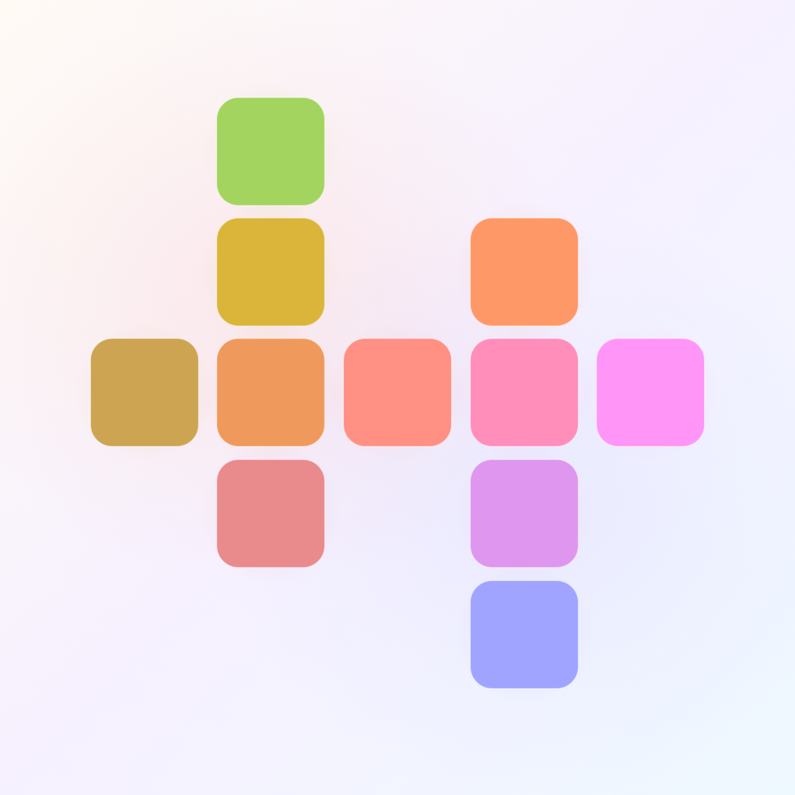

Developer and amateur photographer
Code, color,
systems in motion.
Ian Handy develops applications, creates playful and experimental software, and provides visual interfaces for making difficult-to-understand concepts easier to understand.

kromatikaQ4 2026 Kromatika release
Follow the projectSelected work
Projects where code becomes a material for play, understanding, and a little surprise.
Kromatika, Q4 2026
A color puzzle with a pulse.
Kromatika is a color ordering puzzle game for iPhone. Form gradients featuring procedural levels and a procedural soundtrack that plays in harmony with your moves.
Canvas physics
Celestial Mechanics
Interactive n body gravitational simulator with live parameters and orbital presets.
Open projectWebgl rendering
Ray Marching
Mathematically defined 3D scenes, rendered per pixel through sphere tracing.
Open projectWebgl simulation
Wind tunnel
Fluid dynamics sandbox for making vortex streets visible and explorable.
Open projectTranslation, not automation.
People can meet each other in the middle using AI.
AI isn't just one level above high level programming languages. It's a translation tool across cultures, generations, and everything in between.
Think of a world where your personal AI measures how far apart your viewpoint is from someone you're talking to... Identifies cultural differences between both of you... Asks forgiveness of the other because you were tired and came across as disinterested... Prevents what could have been a serious misunderstanding.
You might say, ‘Ian, good communication already solves this problem without adding extra overhead.’ I say that modern problems require modern solutions. Communication isn't only vocal (nor has it been for quite some time).